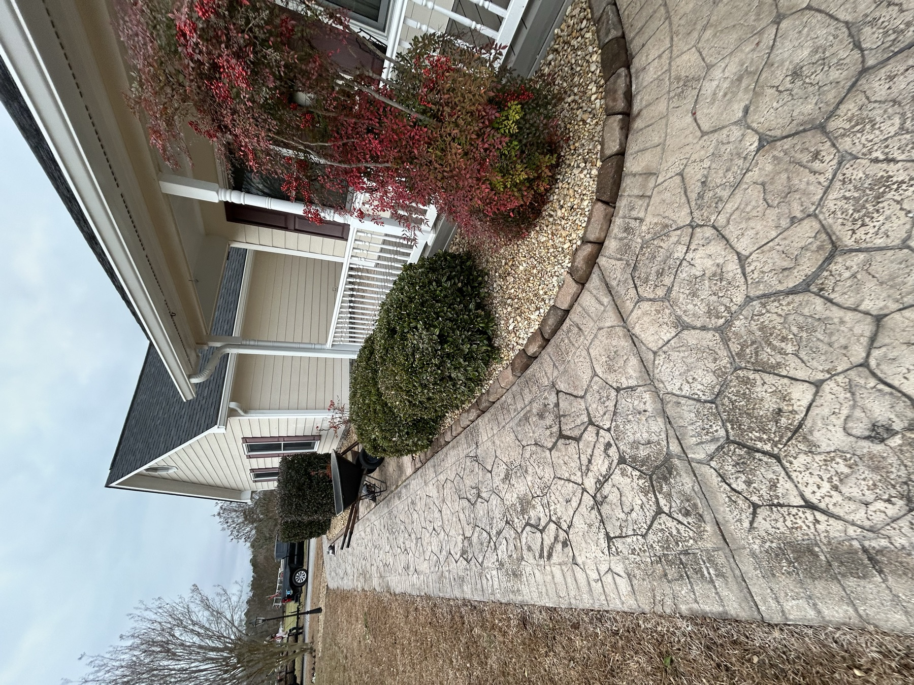

Jacksonville, NC · Landscape Installs
Landscape installs in Jacksonville, NC.
BR Lawn Care installs sod, mulch, rock, refreshed beds, and full yard improvements for homes and commercial properties in Jacksonville, NC.

Local service
Built for Jacksonville properties.
Jacksonville property owners can use BR Lawn Care for sod, mulch, rock, bed refreshes, and yard makeovers without bouncing between multiple crews. The estimate process is direct: send the property details, describe the work, and the crew will confirm scope, access, and scheduling.
- Sod installation
- Mulch and rock beds
- Bed refreshes
- Front yard and curb appeal upgrades
More in Jacksonville
Lawn Care in Jacksonvillemowing, edging, trimming, and cleanupTree & Stump Removal in Jacksonvilletree work, stump grinding, cleanup, and haul-offLand Clearing in Jacksonvillebrush, overgrown lots, downed trees, and debris removalPressure Washing in Jacksonvilledriveways, siding, decks, patios, and walkwaysProperty Management in Jacksonvilleongoing grounds maintenance for rentals, HOAs, and commercial lots